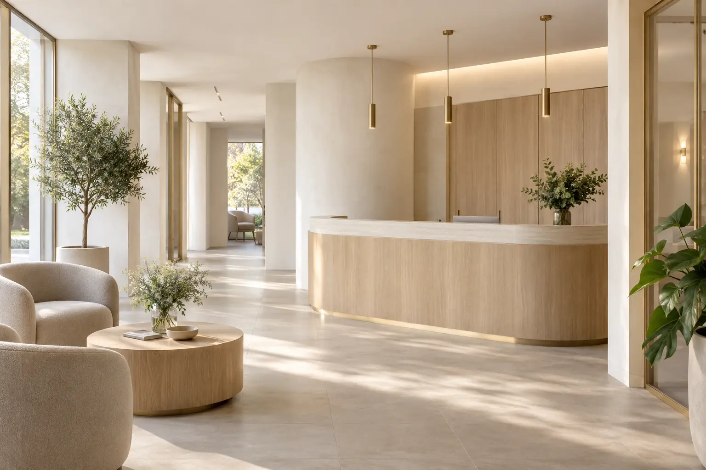
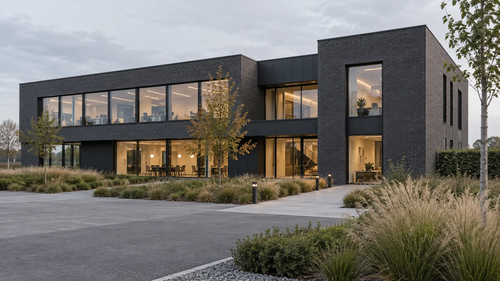
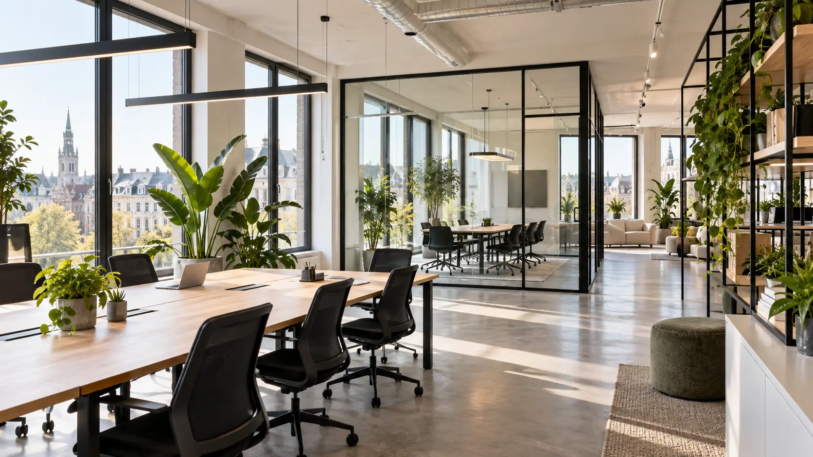

Brand & Website
Sterke merken en snelle websites die bezoekers overtuigen en converteren.
Meer over websites →Jouw digitale partner in België
We helpen Belgische KMO's vooruit met websites, automatisering en AI die helder werken — voor je klanten én je team.
Pragmatisch & technischVan strategie tot uitvoering
Voor KMO'sLokale partner in België
Geen vendor lock-inJij behoudt de controle
Vandaag toepasbaarOplossingen die meteen werken
Onze diensten
Een geïntegreerde aanpak voor de digitale bouwstenen van je bedrijf.
Sterke merken en snelle websites die bezoekers overtuigen en converteren.
Meer over websites →Beter gevonden worden en systematisch meer kwalitatieve leads genereren.
Meer over groei →Repetitief werk automatiseren en je team versterken met toepasbare AI.
Meer over automatisering →Processen eenvoudiger maken met systemen die betrouwbaar samenwerken.
Meer over operations →Uitgelicht
Krijg in korte tijd een helder beeld van je digitale maturiteit en concrete groeikansen.
Ontdek de Health Check ↗Hoe we werken
We leren je bedrijf, doelen en uitdagingen kennen.
We onderzoeken je huidige situatie en kansen.
Je krijgt een concreet plan en visueel voorstel.
We bouwen, lanceren en verbeteren samen.
Van idee naar impact
Betere leads zonder handwerk.
Van aanvraag tot offerte in een fractie van de tijd.
Kennis direct beschikbaar voor je hele team.
Meer inzicht, betere beslissingen.
Real projects. Real results.

WebsiteBrandingSEO
Van lokale speler naar sterke online aanwezigheid in heel Vlaanderen.
0%meer offerteaanvragen
AutomationAI
Efficiëntere administratie en meer tijd voor wat écht telt: patiënten.
0+uur bespaard per maand
WebsiteAICustom tools
Een slim platform dat groei en samenwerking versnelt.
+0%meer actieve gebruikersAchter Bytes & Beyond
Jarno en Matthias combineren design, strategie en technologie om KMO's vooruit te helpen. Pragmatisch, betrokken en altijd met oog voor resultaat.
Meer over ons →Strategy & Systems
“Van idee naar impact, met een aanpak die werkt.”
Automation & AI
“Technologie moet het leven makkelijker maken, niet complexer.”
Veelgestelde vragen
Voor Belgische KMO's die hun website, processen of digitale werking slimmer willen maken — zonder een zwaar IT-traject.
Een compacte website duurt meestal 4–8 weken. Automatiseringstrajecten starten vaak met een korte analyse en groeien stapsgewijs.
Dat hangt af van de scope. Na een vrijblijvende kennismaking krijg je een helder voorstel met vaste afspraken en transparante prijzen.
Ja. We bouwen bij voorkeur verder op wat al goed werkt en koppelen systemen slim aan elkaar.
Ja. Je kiest tussen ondersteuning op aanvraag of een doorlopend verbetertraject.
Klaar voor digitale groei?
Een vrijblijvend gesprek over je situatie, kansen en volgende stappen.